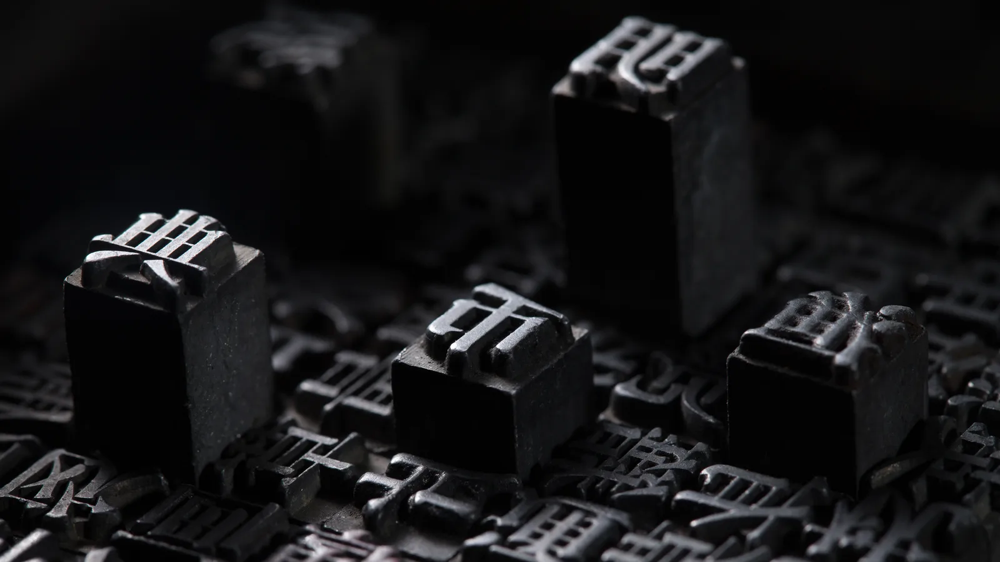
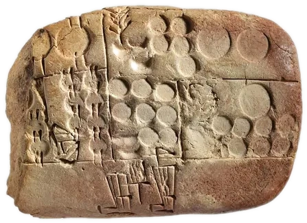
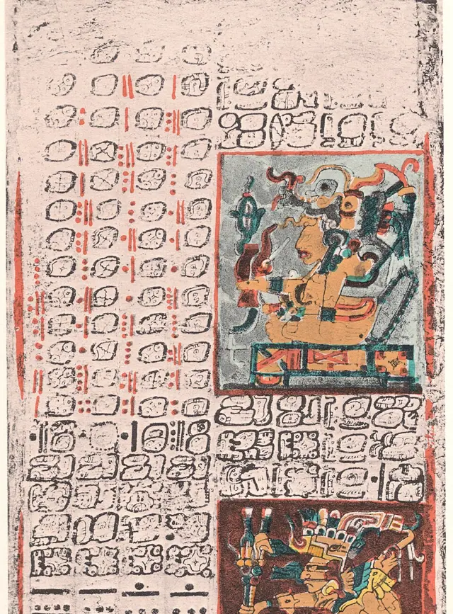
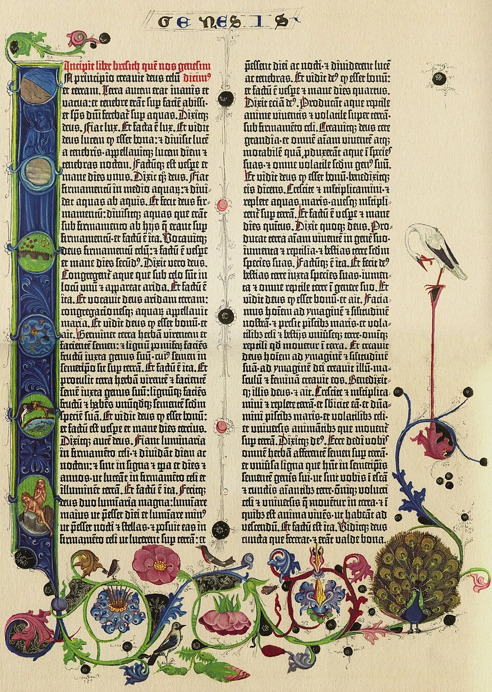
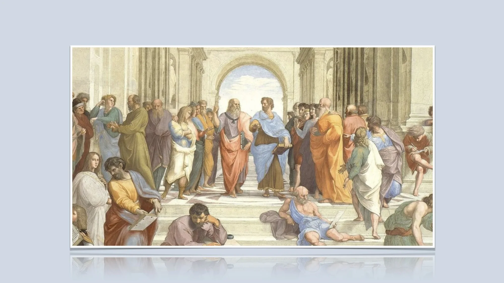
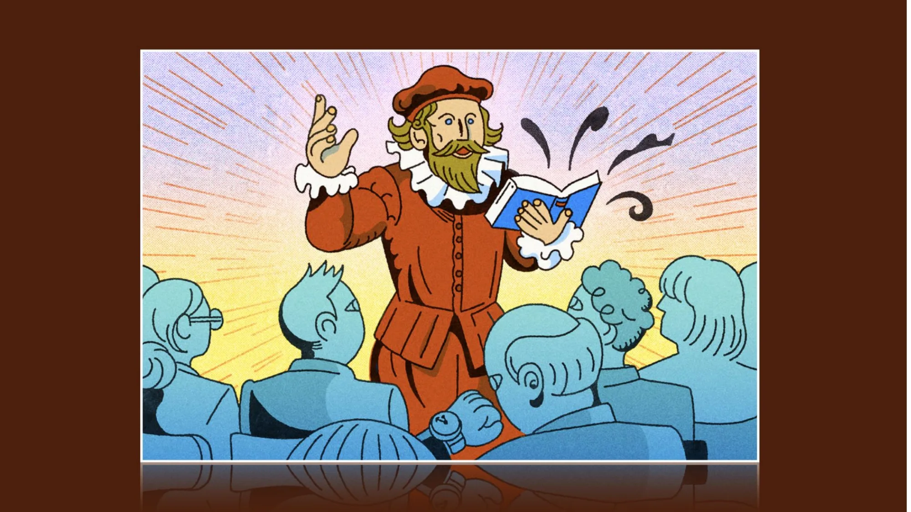
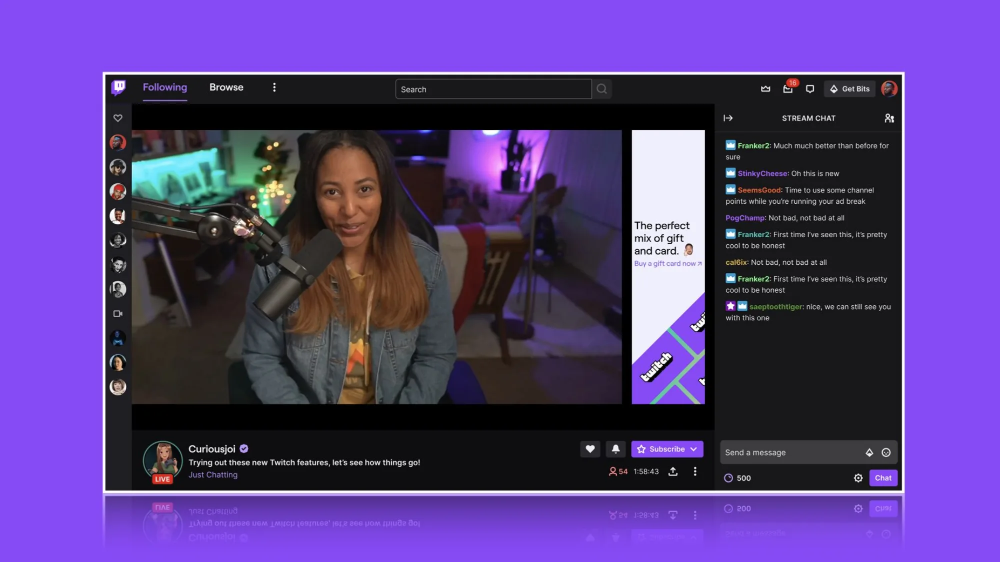
Every card opens with the author’s own words — membership is attestation plus metadata, so it scales with no editorial headcount.
Ask 1 — would your storefront teams give this shelf a home?
The gate is the author’s own statement. No badge, no filter — no store can certify a life.
Ask 2 — what should happen when an attestation is false?
Rosa sees each question.
Nothing appears anywhere unless she publishes it.
No private messaging at any tier.
Ask 3 — what breaks first at scale?
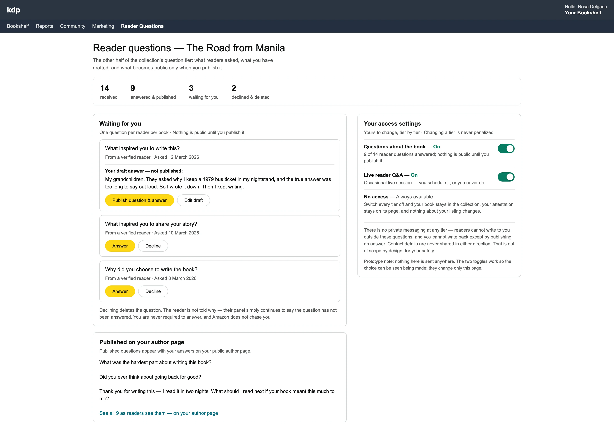
Her answer publishes with the question to her author page — where every future reader can see the person behind the book.
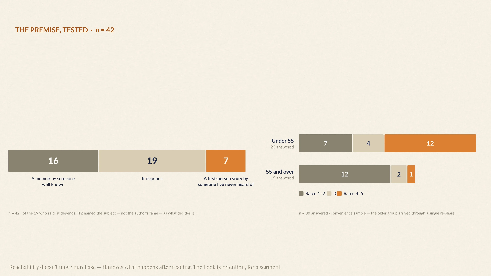
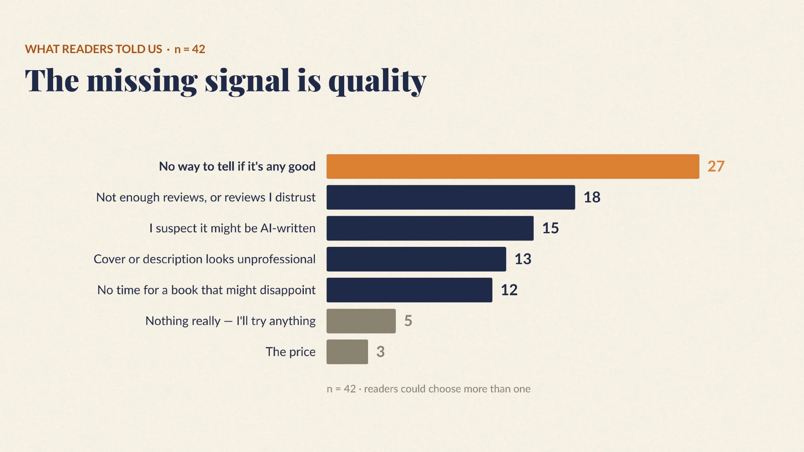
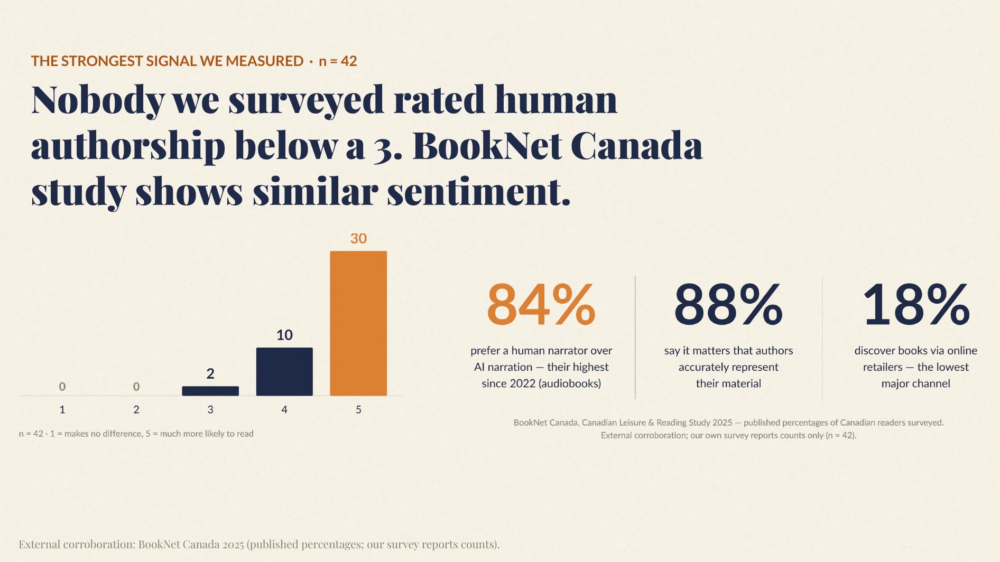
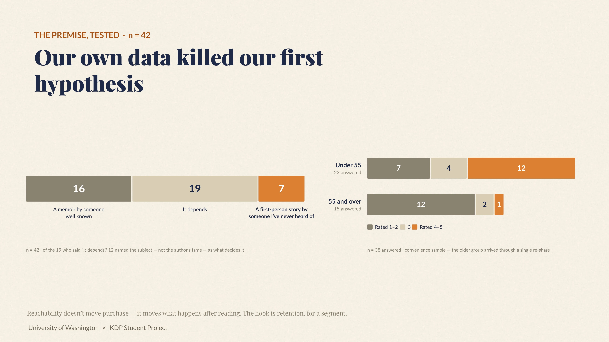
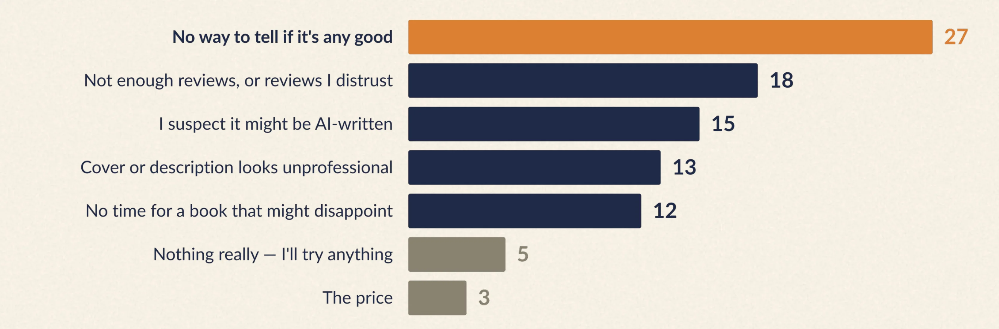
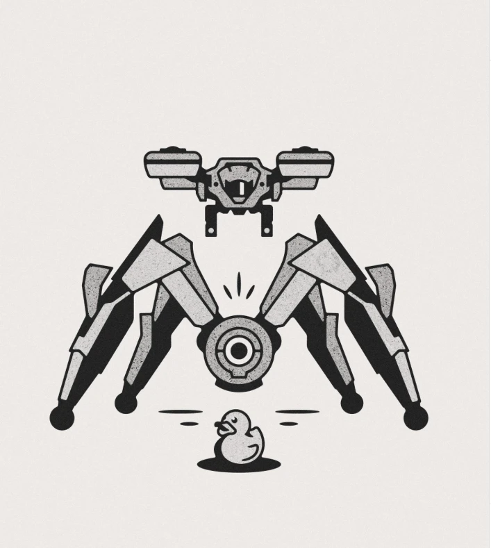